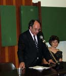

 "Mesajul rămâne încă la nivel de elite și lipsesc, mai ales, inițiativele culturale în provincia italiană". În felul acesta se prezintă, în opinia istoricului Ervino Curtis, Președintele Asociației culturale italo-române "Decebal" din Triest, receptarea culturii române în Italia.
În panorama asociațiilor culturale create de români și italieni în Peninsulă, Asociația "Decebal," constituită în 1987, este, după "Fundația Europeană Drăgan" (1967), cea mai veche organizație existentă în Italia, cu o bogată activitate culturală și de cercetare.
În ce termeni credeți că se poate vorbi astăzi despre receptarea culturii române in Italia?
Din păcate suntem încă departe de o cunoaștere pe scară largă a istoriei, a literaturii și a altor sectoare ale culturii române în Italia, nu numai la nivel popular, ci și, mai ales, la nivelul operatorilor culturali italieni, ca să nu mai vorbim de cei din politică și administrație. Câte ceva a început să se miște în orașele mari unde există instituții române sau asociații de români, însă mesajul rămâne încă la nivel de elite și lipsesc, mai ales, inițiativele culturale în provincia italiană.
Care credeți că este rolul asociaționismului italo-român în ceea ce privește integrarea și dialogul intercultural?
Asociaționismul românesc și italo-român are un rol esențial în procesul de difuzare a culturii și în integrarea românilor în Italia în măsura în care realizează inițiative de deschidere către societatea italiană și nu se închide într-o activitate de cerc sau într-un activism doar în favoarea propriilor membri.
Asociația dumneavoastră se prezintă pe plan comunicațional și cu un site, www.decebal.it, complex și articulat, cu un caracter preponderent cultural, care oferă, pe lângă știrile despre asociație, o serie întreagă de informații, imagini și referiri la cultura și istoria României. Ce ne puteți spune în acest sens?
și aici trebuie să spun că nu sunt mulțumit de mine însumi întrucât, după un prim important moment de investiție de timp și nu numai pentru realizarea și dezvoltarea site-ului, a urmat o perioadă marcată de o serie de probleme personale care nu mi-au permis să-l actualizez așa cum aș fi vrut. Pe de altă parte, am dedicat mult timp și resurse unor variate inițiative cu privire la istro-români. Deși am reușit să introduc pe site peste o mie de imagini interesante, îmi rămân, cu siguranță, tot pe atâtea de inserat, sper într-un viitor apropiat.
Dumneavoastră și asociația pe care o conduceți acordați o atenție specială istro-românilor. Cum se prezintă, la începutul mileniului trei, situația istro-romanilor și cum se poate duce mai departe cauza lor?
Situația istro-românilor este din ce în ce mai dramatică întrucât, dacă Maiorescu, încă din prima sa călătorie în Istria, în 1857, era uimit de permanența acestei culturi și îi dădea doar câteva decenii de supraviețuire, ne putem imagina cum stau lucrurile după un secol și jumătate. Iar dacă Brătianu vorbea despre limba română ca despre o enigmă și un miracol, cu atât mai valabilă este această aserțiune pentru istro-româna care, dincolo de orice previziune, încă mai este vorbită de câteva sute de istrieni croați.
O expoziție pe care am realizat-o despre istro-români ca primă imigrație a românilor spre vest, în iunie 2007 la Triest și apoi la Toppo di Travesio și Veneția, iar în mai 2008 la Timișoara și în septembrie la Sibiu, a repropus tema la diferite nivele de interes. În plus, catalogul expoziției a reprezentat o primă publicație în absolut cu caracter istorico-divulgativ privind cultura și limba acestora.
Un alt moment de interes a fost teza de licență despre istro-români realizată de Gilberto Pegoraro la Universitatea Ca' Foscari din Veneția. De asemenea, cunoscuta revistă românească "Formula AS" a dedicat trei articole de fond acestei expoziții și istro-românilor.
Cred că, dacă asociațiile românești din Italia ar contribui activ la organizarea acestei expoziții în diferite orașe italiene, s-ar înregistra cu siguranță un rezultat pozitiv cu privire atât la imaginea României, cât și a istro-românilor. De altfel, universitățile românești, facultățile de litere, ar trebui să organizeze stagii în locurile unde se mai găsesc istro-români, așa cum încearcă să facă Universitatea de Vest din Timișoara.
În contextul prezent al realității românești din Peninsulă, cum caracterizați abordarea presei italiene?
Presa italiană reflectă, desigur, marea ignoranță a poporului italian în ceea ce privește România și românii, cu excepțiile de rigoare, bineînțeles. Românii - confundați cu etnicii rom, cu slavii ori puși laolaltă cu ceilalți imigranți, marocani, kurzi, tunisieni etc. - sunt, în general, tratați așa cum presa din nordul Italiei îi trata pe italienii veniți din sud în anii '50.
Este normal ca totalul semnificativ al românilor din Italia să comporte, statistic vorbind, un număr de asemenea crescut în cazul delicvenților, ca și un număr cu siguranță mult mai important de persoane care lucrează și plătesc taxe statului italian, inclusiv cele pentru pensionari, apoi un număr apreciabil de noi cetățeni care umplu clasele în descreștere ale elevilor noștri, împiedicând o redimensionare nu mai puțin negativă a personalului didactic, un număr în continuare determinant de asistenți sociali care compensează carențele în acest sens ale societății italiene și dificultățile familiilor în îngrijirea persoanelor în vârstă, un număr consistent de lucrători în agricultură și păstorit care au împiedicat o preocupantă criză a sistemului agro-alimentar italian, un număr substanțial de muncitori în construcții și industrie care acoperă deficitul de personal determinat de disponibilitatea scăzută a italienilor de a lucra în acest sector și, din păcate, un număr deloc neglijabil de accidente - uneori soldate cu moartea - la locul de muncă etc. Ar trebui ca toți împreună să recompunem și să reconsiderăm imaginea de ansamblu pe care o dau aceste remarcabile numere.

Cultura romena in Italia. Il punto di vista di Ervino Curtis
"Il messaggio rimane ancora a livello di élite e soprattutto mancano iniziative culturali nella provincia italiana". Si presenta in questo modo, a giudizio di Ervino Curtis, presidente dell'Associazione culturale di amicizia italo-romena "Decebal" di Trieste, la diffusione della cultura romena in Italia. Tra le associazioni culturali create da romeni e italiani nella Penisola, l'Associazione "Decebal," fondata nel 1987, è, dopo la "Fondazione Europea Drăgan" (1967), la più antica organizzazione esistente in Italia, con una ricca attività culturale e di ricerca.
In che termini si può parlare, a suo parere, della ricezione della cultura romena in Italia oggi?
Purtroppo siamo ancora lontani da una conoscenza diffusa della storia, della letteratura e di tutti gli altri campi della cultura romena in Italia, non solo a livello popolare ma soprattutto a livello di operatori culturali italiani, per non parlare di politici o amministratori. Qualche cosa si sta muovendo nelle grandi città dove ci sono istituzioni romene o associazioni di romeni, però il messaggio rimane ancora a livello di élite e soprattutto mancano iniziative culturali nella provincia italiana.
Quale è il ruolo dell'associazionismo italo-romeno nell'integrazione e nel dialogo interculturale?
L'associazionismo romeno e italo-romeno ha un ruolo essenziale nel processo di diffusione culturale e nell'integrazione dei romeni în Italia nella misura in cui attui iniziative di apertura verso la società e non si chiuda in un'attività di circolo o di attivismo solo verso i soci.
La sua associazione si è impegnata sul piano della comunicazione anche con un sito Internet, www.decebal.it, complesso e articolato, di carattere preminentemente culturale, che offre, oltre alle notizie dell'associazione, tutta una serie di informazioni, immagini e riferimenti sulla cultura e sulla storia della Romania. Quale è la sua esperienza al riguardo?
Anche qui devo dire che non sono soddisfatto di me stesso. Poiché, dopo il primo grosso momento di investimento di tempo e, non solo, sul sito, sono poi stato travolto da molteplici problemi di carattere personale che mi hanno impedito di aggiornarlo come avrei voluto. D'altronde, diverse iniziative sugli istroromeni hanno preso la gran parte del mio tempo e delle mie risorse. Sicuramente, nonostante sia riuscito ad inserire oltre 1000 immagini interessanti sul sito, ne ho altrettante da inserire spero in un prossimo futuro.
Lei e la sua associazione accordate una particolare attenzione agli istroromeni. Come si presenta, all'inizio del terzo millennio, la situazione degli istroromeni e come si può portare avanti la loro causa?
La situazione degli istroromeni è sempre più drammatica poiché, se già il Maiorescu nel suo primo viaggio in Istria nel 1857 si stupiva della permanenza di questa cultura e dava a essa solo pochi decenni di sopravvivenza, si può immaginare dopo un secolo e mezzo come possa essere la situazione. Però, se Brătianu parlava della lingua romena come un enigma e un miracolo, ancor di più tale assunto vale per l'istroromeno che, al di la di tutte le previsioni, viene ancora parlato da alcune centinaia di istriani croati.
Una mostra da me fatta sugli istroromeni, quale prima immigrazione di romeni verso l'ovest, nel giugno del 2007 a Trieste e reiterata a Toppo di Travesio, a Venezia, poi nel maggio del 2008 a Timișoara e nel settembre a Sibiu, ha riproposto il tema a diversi livelli di interesse. Inoltre, il catalogo della mostra ha costituito una prima pubblicazione in assoluto di tipo storico divulgativo sulla cultura e sulla lingua. Un ulteriore momento di interesse è stata la tesi di laurea sugli istroromeni alla Ca' Foscari di Venezia del dottor Gilberto Pegoraro. Ben tre articoli di fondo sulla mostra e sugli istroromeni sono stati dedicati dalla diffusissima rivista romena "Formula AS".
Credo che, se le associazioni romene in Italia si facessero parte dirigente per organizzare la mostra nelle varie città italiane, ci sarebbe un sicuro ritorno positivo sia sulla immagine della Romania che sugli istroromeni stessi. Inoltre, le università romene, facoltà linguistiche, dovrebbero organizzare stages nei luoghi degli istroromeni, come sta cercando di fare l'Università de Vest di Timișoara.
Qual è il suo giudizio sul modo in cui la stampa italiana riflette la realtà socio-culturale dei romeni in Italia?
La stampa italiana riflette naturalmente la grande ignoranza che lo stesso popolo italiano ha sulla Romania e sui romeni, salvo casi rari. I romeni confusi con i rom, con gli slavi e ammassati assieme ai marocchini, curdi e tunisini ecc., vengono generalmente trattati come la stampa del nord Italia trattava negli anni '50 i meridionali. È naturale che il grande numero complessivo dei romeni in Italia porta statisticamente a grandi numeri anche per coloro che delinquono tra i romeni, ma altresì porta anche a grandi numeri di lavoratori che pagano le trattenute dell'INPS per i pensionati italiani, a grandi numeri di nuovi nati che riempiono le vuote aule scolastiche e impediscono pesanti ridimensionamenti di personale scolastico, a grandi numeri di badanti che sopperiscono alle carenze della società italiana e alle difficoltà delle famiglie verso gli anziani, a grandi numeri di addetti all'agricoltura e pastorizia che hanno impedito una tremenda crisi del settore agroalimentare, a grandi numeri nell'industria e nell'edilizia coprendo le carenze provocate dalla poca disponibilità di lavoratori italiani, con purtroppo grandi numeri anche tra i deceduti sul posto di lavoro ecc. Bisognerebbe più spesso accomunare tutti insieme questi grandi numeri.
Afrodita Carmen Cionchin
November 24, 2010
© 2010 Romanian Global News